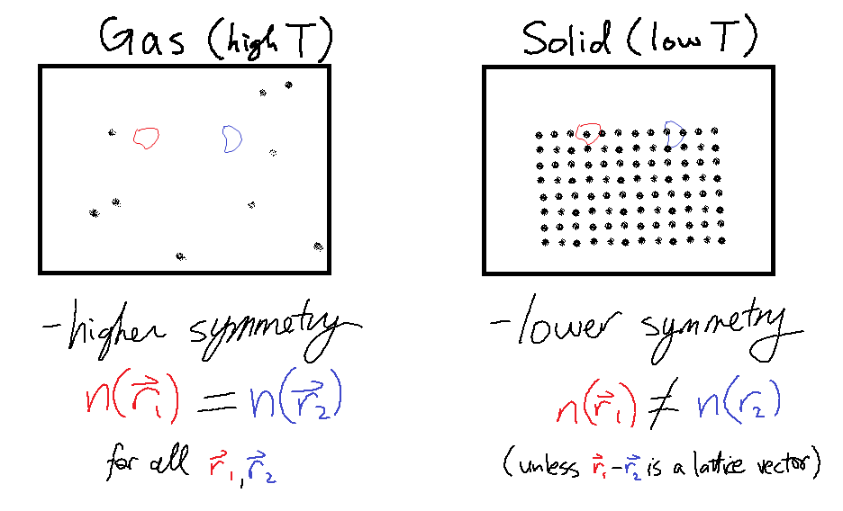
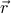
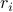
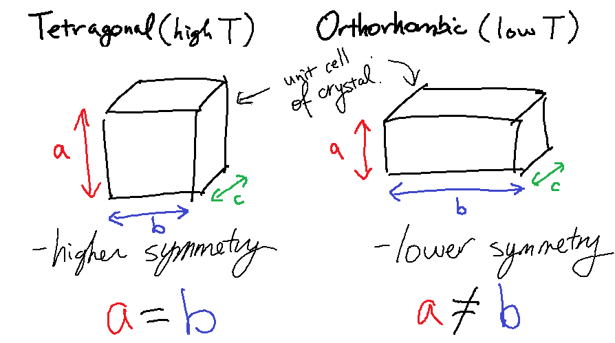
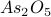
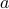
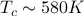
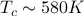
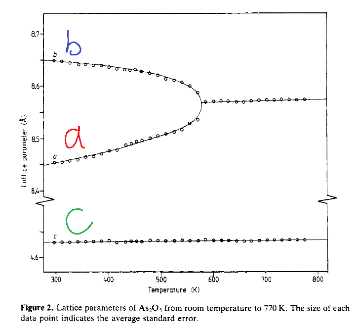

Symmetry in Phase Transitions
At this point we switched gears a bit and started talking about symmetry.
As we've probably heard by now, symmetry plays a key role in ‘‘fancy’’ physicist thinking, and serves as a helpful guiding principle to think about different phases of matter. The main idea behind symmetry is:
Different phases of matter are characterized by different sorts of symmetry. At higher temperatures, matter takes on a ‘‘higher symmetry’’ phase; at lower temperatures, the phases are of lower symmetry or ‘‘broken symmetry.’’
Now honestly, this statement sounds pretty abstract. From my impression of Prof. Kivelson, I think he'll be emphasizing the concept of symmetry over and over again, so I think it's well worth getting a better understanding of what these words actually mean. Since the formal treatment of symmetry groups can be intimidating and unenlightening, I think the best approach is to build our intuition through a few concrete examples.
In the intro lecture, Prof. Raghu gave an example of symmetry-breaking between solids and gases. Let's say we have a system of  particles which undergoes a solid-gas phase transition at some temperature.
particles which undergoes a solid-gas phase transition at some temperature.
At high temperatures, in the gaseous phase, the particles are flying around everywhere, and have equal probability of being anywhere inside the box.
At lower temperatures, the particles have crystallized into a solid lattice, and they're trapped within the crystal lattice and can only vibrate around their equilibrium lattice positions.

The key idea is that the symmetry of these two phases is different – the gas phase is of higher symmetry, while the solid phase is of lower symmetry. To illustrate this, let's consider the density of particles in a little region centered around a position  in the box.
In the gaseous phase, the density of particles is homogenous – it doesn't matter where in the box you look, there's the same chance you'll find a particle – so is independent of  (i.e., it's a constant). We say the gas has the property of being translationally invariant – if you ‘‘translate’’ a gas (slide around all the particles), the system is ‘‘invariant’’ (nothing changes).
In the solid (crystal) phase, the density of particles is no longer homogenous! If you look near a crystal lattice site, then the density of particles is very different than if you look somewhere between the atoms of the crystal. In other words, is no longer independent of . We say that a crystal exhibits broken translational invariance.
Here are a few more remarks that might either be more enlightening or more confusing, depending on your tastes:
Even though in a crystal is no longer constant, it's still clearly symmetric, by some notion of the word symmetric. For instance, if we translate the whole crystal over so that the unit cells all line up and the atoms lie on top of their brothers and sisters, then the crystal still looks the same! More formally, if we translate the system by a lattice vector , then the density remains invariant; i.e., .
You might argue that this statement held true for the gas as well – but they key difference is that only a subgroup of translations works for the crystal. In a gas, every single possible translation by preserved the density, but in a crystal, only certain special s – the lattice vectors of the crystal – work for preserving the density . In other words, after the gas-solid phase transition, we go from every possible to s of the form , where and are the basis vectors of the crystal's Bravais lattice. To use more technical language, we say that the continuous symmetry group of the gas has been reduced to a discrete subgroup in the crystal.
Here's silly (but important!) philosophical comment about the argument above.
We ought to be a bit more careful about what exactly we mean when we say ‘‘the density ’’. Clearly, we're not considering a frozen ‘‘snapshot’’ of the system, but rather, some sort of average – and the questions about what sort of average we're taking is quite subtle and important! For instance, if we take the typical ensemble average and sum over all the states of the system, then will actually be homogenous in the solid phase, because we'll be summing over all the translations and orientations of the crystal as well. What we really want to do here is to take a time average of the system; that is, we only consider the portion of phase space that's actually accessible by the system in the symmetry-broken phase. This way, we only sum over the jigglings of the particular orientation and location assumed by the crystal.
There still remains a confusing, mysterious, and deep question about this whole affair of broken symmetry: The Hamiltonian of the crystal is still translationally invariant, even though the crystal phase has broken that translational invariance! In other words, the Hamiltonian – which tells you the energy of the system and consequently how it behaves – doesn't care about how you slide around the system, but somehow, the crystal does. This is pretty weird. The laws governing system behavior don't specify the location of the crystal, but somehow, the crystal lattice has decided for itself which particular to anchor itself too.
Another example of symmetry breaking
Here's another (strange) example of a phase transition, courtesy of my dear friend Scott Reid. We didn't cover it in class, but I personally find it helpful for understanding how symmetry is broken.
This peculiar phase transition emerges from the dark art of crystallography, and it involves shape-shifting crystals — crystals which take on the shape of a square at high temperatures, but deform into rectangles at low temperatures!
You'd think that the funny business shape-shifting crystals has nothing to do with phase transitions or symmetry breaking, but the fact that they do emphasizes how broad, far-reaching, and universal the principles of statistical mechanics can be…
To be more precise, we need to consider the basic repeating unit in the crystal, called the unit cell. The shape of the unit cell, which is described by the lattice parameters, determines the structure of the crystal lattice. At higher temperatures, two axes of the unit cell have the same length, whereas but below the critical temperature, they become different lengths. This behavior is best illustrated in the schematic below. (Diagram not too scale!)

This square-to-rectangle phase transition is another example of symmetry breaking. At high temperatures, the two axes are equivalent, so there's a symmetry between the a-axis and the b-axis – it doesn't matter which one you call which. But at low temperatures, this symmetry is broken – one of them has decided to become long, the other has become short.
For good measure, I'll also include a figure from a paper that talks about the structural phase transition of the material . You can clearly see that the two lattice parameters  and  are identical at high temperature, but as you decrease the temperature below , the two lattice parameters and become different.
are identical at high temperature, but as you decrease the temperature below , the two lattice parameters and become different.

Summary and moving on
The whole affair of symmetry breaking in phase transitions can be pretty opaque and confusing, but I hope that these examples can somewhat add to the intuition. We've seen two examples so far – the solid-gas phase transition, and the orthorhombic-tetragonal structural transition – and hopefully we'll get to see more examples as the course goes on.
Up next, we'll be spending a while on one particular example to try getting a better intuition about all the funny business that's going on here. It's called the Ising Model.
References: S A T Redfern and E Salje 1988 J. Phys. C: Solid State Phys. 21 277